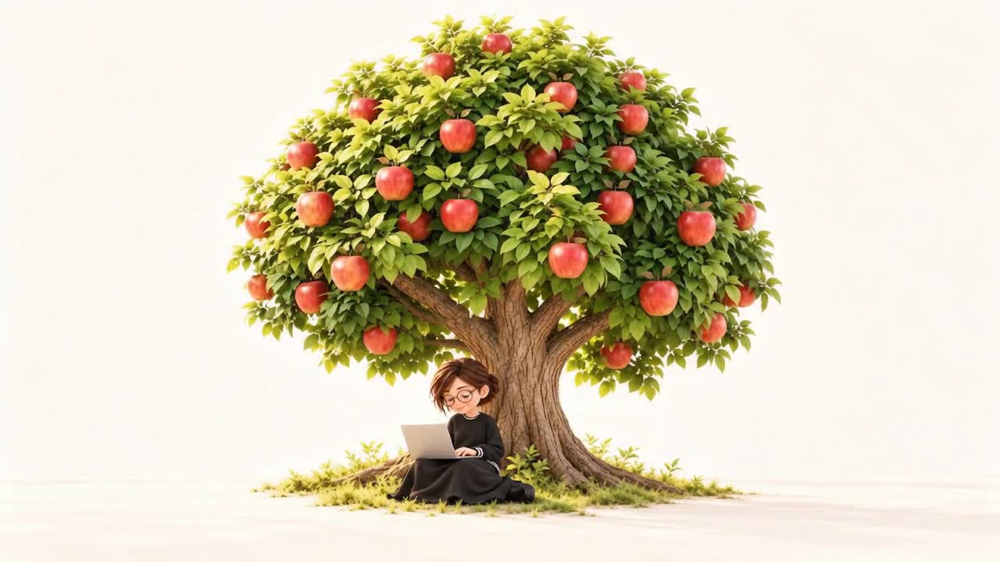

01 / CLIENT WORK
実案件
MAIN CASE STUDY
La vie belle.mf
担当：ヒアリング・LP構成・撮影・デザイン・コーディング・チャットボットの設計と実装・アクセス解析導入・ロゴ制作・Instagram運用
サロンの想いと施術の魅力を整理したLPに、予約前の疑問にその場で答えるAIチャットボットを組み込みました。
View Case StudyYUUKI / WEB DESIGNER
あなたらしさを、伝わるかたちに。 Web・LP・Reelsをつなぎ、 届いた先の行動まで設計します。 美容業界12年以上の接客経験を活かし、サロン・美容ブランドの制作を担当しています。
01 / SELECTED WORKS
実案件・依頼制作・自主制作
01 / CLIENT WORK
実案件
MAIN CASE STUDY
担当：ヒアリング・LP構成・撮影・デザイン・コーディング・チャットボットの設計と実装・アクセス解析導入・ロゴ制作・Instagram運用
サロンの想いと施術の魅力を整理したLPに、予約前の疑問にその場で答えるAIチャットボットを組み込みました。
View Case Study02 / COMMISSIONED WORK
依頼制作
担当：市場調査・コピーライティング・LP構成・デザイン・コーディング・AIビジュアル
「隠す」から「活かす」へ。リサーチからブランドの立ち位置を設計したヘアケアLP。
View Case Study03 / PROJECT
自主制作
担当：市場調査・LP構成・UIデザイン・コーディング・AIアバター・動画制作
「完璧じゃなくていい」を軸に、LPとReelsをひとつの世界観で設計した自主制作。
View Case Study04 / PROJECT
自主制作
担当：企画・キャラクター制作（AI画像・動画・音声）・リール編集・LP制作・チャットボットの設計と実装
イベントの魅力を楽しく伝え、LP・Reel・Chatbotへ展開したWebプロジェクト。
View Case Study05 / PROJECT
自主制作
担当：企画・ペルソナ設計・ワイヤーフレーム・UIデザイン・コーディング
サウナの空気感をビジュアルと言葉で伝える、世界観を大切に設計したランディングページ。
View Case Study02 / SERVICE
01 / WEB・LP
想いと魅力を整理し、
次の行動につながるWebサイトへ。
サービスの魅力や届けたい相手を整理し、情報設計からデザイン、実装まで一貫して制作します。
Web・LP実績を見る02 / REELS・VIDEO
LPへつなぐ、
最初のきっかけをつくる。
短い時間の中で魅力が伝わる構成を考え、WebやLPへの入口となる動画を制作します。
リール実績を見る03 / ABOUT

GROW AT YOUR OWN PACE.
WebサイトやLPを中心に、
リール・動画までつなげた制作をしています。
前職では美容業界で12年以上、お客さまの悩みを伺い、スキンケア・ヘアケアを提案してきました。
その経験を、伝わるWeb・LP・リールづくりに活かしています。
大切にしているのは、
ただ「きれいなもの」を作ることではありません。
どんな想いがあるのか。
誰に届けたいのか。
その人にどう伝われば、
次の行動につながるのか。
一つひとつ整理しながら、
そのサービスらしい伝え方を考えます。
そして、公開して終わりではなく、
その後の反応を見ながら改善し、
少しずつ育てていく。
そんな制作を目指しています。
04 / HOW I WORK
静かに育ち、最後に実る。
一つひとつの工程を、丁寧に。
01 HEAR
まずは、サービスへの想いや、
「誰に、何を届けたいのか」を丁寧に伺います。
02 RESEARCH
ターゲットや競合を調べ、
サービスならではの魅力や課題を整理します。
03 DESIGN
リサーチをもとに情報を整理し、
デザイン・コンテンツ・導線を設計します。
04 CREATE
設計した内容をもとに、
Webサイト・LP・Reelsなど、
目的に合った形へ落とし込みます。
05 GROW
公開して終わりではなく、
反応やデータを見ながら改善し、
より届く形へ育てていきます。
想いを育て、実りにつなぐ。
05 / CONTACT
制作のご相談・ご依頼
WebサイトやLPの制作、
リールからLPへつなぐ導線づくりなど、
まずはお気軽にご相談ください。
まだ内容が決まっていない段階でも、
「何を作ればいいかわからない」
というところから一緒に整理します。
直接のご相談はこちらのフォームから
内容を確認のうえ、
ご入力いただいたメールアドレスへご連絡します。
Instagramでも制作実績を発信しています。